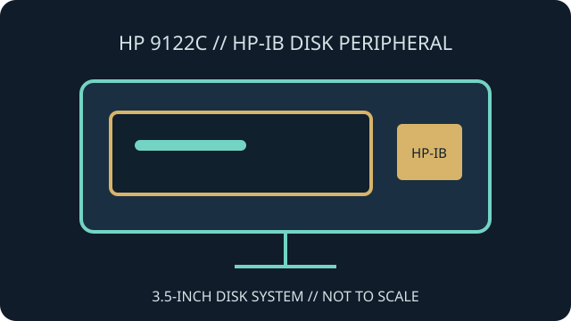

[ INDIVIDUAL COMPONENT // FLOPPY DRIVES ]
Hewlett-Packard 9122C Disk Drive
The HP 9122C is an external floppy-disk peripheral documented for HP-IB systems. The owner manual is the controlling reference for its disk support, setup, addressing and host-specific operation.

IDENTIFICATION NOTE: Do not treat the 9122C as a generic PC floppy enclosure. Confirm the complete suffix, installed drive configuration, supported media and required host software from the owner manual.
Model specifications
| Catalog subcategory | External floppy mechanisms |
|---|---|
| Exact model | Hewlett-Packard 9122C IEEE-488 floppy disk drive |
| Mechanism / media | 3.5-inch flexible-disk system; exact mechanism configuration, media types and formatted capacity should be matched to the model manual. |
| Host interface | HP-IB (IEEE-488 / GPIB) connection; configure the bus address and cabling for the intended HP host. |
| Disk format | HP-system disk formats documented for the 9122C; do not assume that PC-formatted media or arbitrary IEEE-488 software can use it. |
| Host compatibility | Compatible HP systems with appropriate HP-IB hardware and system software. Verify support in the host-specific manual before connecting or formatting media. |
Model-specific compatibility checks
- Use the 9122C owner's manual to identify the exact configuration and supported system family.
- Set HP-IB address and bus termination correctly; avoid double-terminating an already-terminated endpoint.
- Identify disk format and file system separately from the physical 3.5-inch media size.
Preservation and service notes
Record drive configuration, address switches, host model and software version. Follow the model's service instructions for cleaning and repair; do not substitute generic PC alignment assumptions.
For archival work, capture provenance and retain disk images in the original format before conversion. Keep test writes away from source media.
Manufacturer documentation & sources
- HP 9122C IEEE-488 Floppy Disk Drive Owner's ManualScan of the HP owner manual for operation and model-specific interface details.
- HP 9121/9122 Customer Engineer HandbookArchived service reference for the HP 9121/9122 disk-drive family.
Use the 9122C owner's manual for model-specific setup and the service handbook only where its coverage matches the unit.